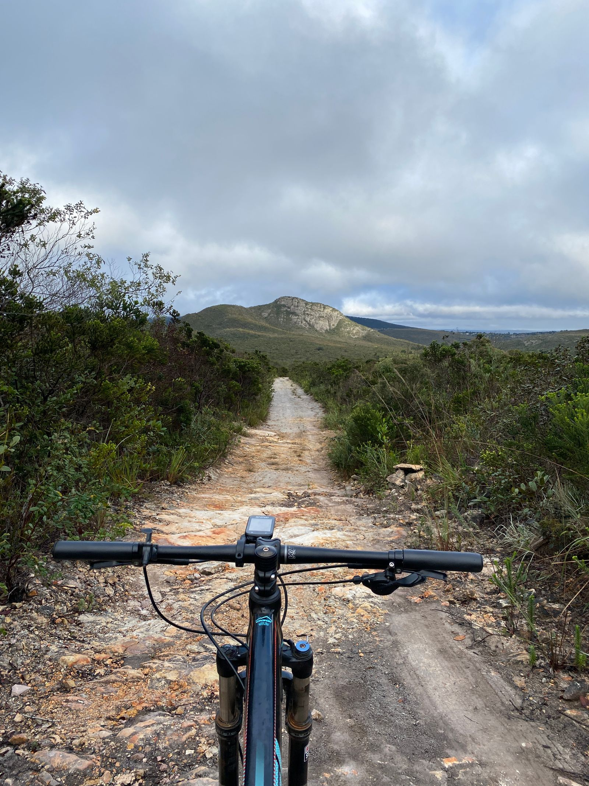

Nepali-run · small groups · Himalaya
The Himalaya,
at the pace you choose.
Mountain biking, trekking and multi-activity adventures through Nepal, run by Nepali guides in groups small enough that the villages on the route can absorb them. Every trip states what it actually asks of you — fitness, technical ground and altitude, scored separately.
Four questions, and we will show you what fits
No account, and we do not ask for your email address to show you results. Answer as many as you like.
Loading the finder…
Adventures
Trips running now
Pulled live from the database. Every figure on these cards is the actual trip — the distance, the climbing, the altitude and the spaces genuinely left on the next departure.
Why High Route
Four things that are structural, not marketing
Each of these is checkable. Ask us, and ask anyone else you are considering the same question.
Local experts
Nepali guides and support team, from the regions they guide in, employed directly. In a country where the weather decides and the route changes year to year, the person making the call on the day matters more than the itinerary.
Small groups
Capped between 8 and 12 depending on the route, lower on the remote circuits, and shown on every trip page. A guide who can see everyone can make a safety call for everyone — and a village of forty people cannot absorb a group of twenty without the place changing for the people who live there.
Adventure specialists
Difficulty is scored in three dimensions rather than one, because fitness, technical ground and altitude are different problems and a single number hides which one will stop you.
Practical logistics
Acclimatisation days built in rather than traded away. Spare days on itineraries that depend on a weather-dependent mountain flight. Permits, transfers and park fees handled, and anything compulsory but charged separately listed as a mandatory charge rather than left to be discovered.
Explore Nepal
By destination
Seven regions, each with a different season, a different altitude and a different reason to go — including, where it applies, the honest reason we do not run a particular kind of trip somewhere.
Our impact
Adventure that gives back
Not a badge and not an offset. Three operating decisions, and a page that shows which figures we can stand behind and which we cannot yet.
Local first
Nepali guides and support team, employed directly. Village lodges and teahouses on the hill routes rather than operator-owned camps, so the money for a bed goes to the village. Transport, food and permits bought in-country.
Small by design
The group-size cap is the first environmental lever and the least glamorous one. It is also why there is always somebody free to descend with a traveller who needs to go down.
Give back to the trail and the community
Above the roadhead there is no waste collection, which makes packaging an operating decision rather than a gesture. Trail maintenance and conservation contributions are recorded per departure — and the figures are not published until they are real.
A long-haul flight to Kathmandu is the dominant environmental cost of a Himalayan holiday and nothing here offsets it. We are not going to tell you otherwise. What can honestly be said is narrower: once you are here, the money can stay here and the group can be small enough not to overwhelm the places it passes through.
Traveller stories
From people who actually rode
Written by riders from their own account after their departure. We do not write our own, and we do not borrow one trip’s reviews for another — so if a trip has none, its page says so.
Loading reviews…
Ready when you are
Browse what runs, answer four questions, or tell us what you had in mind and we will say honestly whether it works and when.